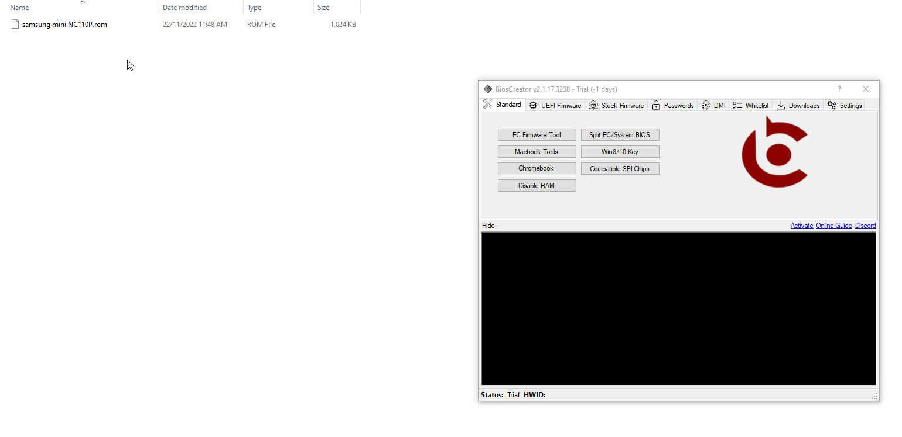

<style>
    .center {
        display: block;
        margin-left: auto;
        margin-right: auto;
        width: 50%;
      }

    a {
      text-decoration: none;
      display: inline-block;
      padding: 8px 16px;
    }
    
    a:hover {
      background-color: #ddd;
      color: black;
    }
    
    .previous {
      background-color: #f1f1f1;
      color: black;
    }
    
    .next {
      background-color: #160042;
      color: white;
    }
    </style>

<section class="support section bg-gray">
	<div class="container">
    <div class="container" style="text-align:justify; margin-bottom:50px;">
      <h4 class="join">Samsung</h4>
      <p>Bioscreator supports downloading the firmware directly from the application. This is a new feature and require further testing and feedback from end-users. Moreover, this feature works for firmware with bios version and platform ID in them.</p>
<br>
    <h2>Here's how you do it:</h2>
    

    <a href="{{ site.baseurl }}/stock-firmware/sony" class="previous">&laquo; Previous</a>
    <a href="{{ site.baseurl }}/stock-firmware/ecs" class="next">Next &raquo;</a>

 
		</div> <!-- End row -->
	</div> <!-- End container -->
</section> <!-- End section -->